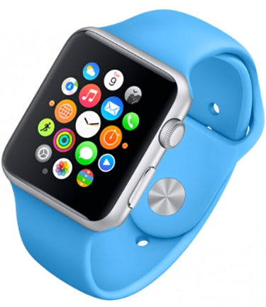

El Tinglado nace de la voluntad de crear un espacio donde la gastronomía andaluza se encuentre con un diseño contemporáneo sin artificios. Nuestro equipo abordó el proyecto con la premisa de respetar la identidad del lugar —un antiguo almacén portuario— y transformarlo en un restaurante que respira autenticidad.
La intervención se centró en potenciar los elementos existentes: vigas de madera vista, muros de ladrillo y una altura generosa que permitieron jugar con volúmenes y recorridos.

Se diseñó una distribución que articula tres ambientes diferenciados: la barra principal como corazón del local, el comedor con vistas a la cocina abierta, y una zona de reservados más íntima bajo la estructura original de madera.
Los materiales seleccionados —madera de roble, acero corten, cerámica artesanal y textiles naturales— dialogan con la memoria industrial del edificio sin caer en la nostalgia.



Conceptualización completa del espacio, desde el estudio previo hasta la selección final de materiales y mobiliario.
Diseño de un esquema lumínico que crea ambientes diferenciados y potencia la experiencia gastronómica.
Supervisión integral de la ejecución para garantizar que cada detalle refleje la visión del proyecto.
Cada espacio tiene una historia que contar. Cuéntanos la tuya y la haremos realidad.
Contactar